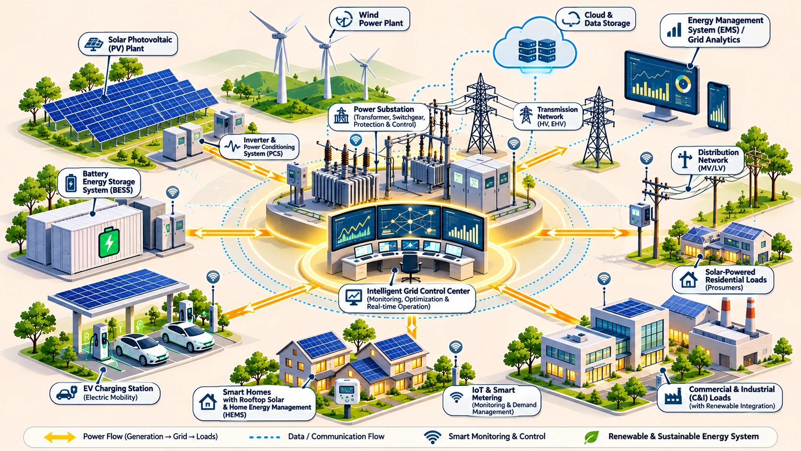
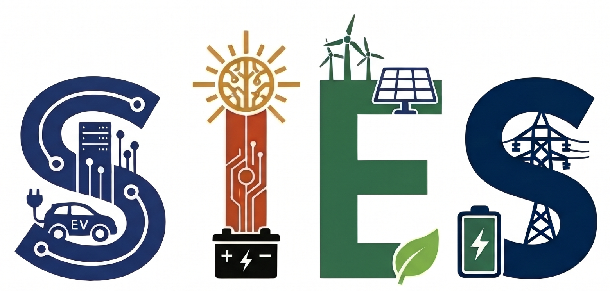

Multiagent–Multilevel Coordination Based Transactive EV Charging Framework
A coordinated framework for EV charging through multiple levels of agents and transactive scheduling.
View publication ↗
We work on the modelling, optimisation and intelligent operation of modern power systems—bringing electric mobility, renewable generation and distributed energy resources together.
SIES Laboratory is led by Dr. Payal Vyankat Dahiwale, Assistant Professor in Electrical Engineering at IIT Jodhpur.

Our research combines power-system engineering, mathematical modelling, optimisation and intelligent control to address the technical and operational challenges of a changing energy landscape.
Coordinating EV charging with distribution-network constraints, user needs and system objectives.
Explore theme ↗Understanding the coordinated operation of variable generation, flexible demand and distribution networks.
Explore theme ↗Exploring battery storage, vehicle-to-grid interactions and flexibility for future energy systems.
Explore theme ↗Applying optimisation, modelling and data-driven methods to manage complex energy systems.
Explore theme ↗We welcome conversations with motivated students, early-career researchers and collaborators who want to work on practical challenges in sustainable power and energy systems.
Explore research directions in EV integration, smart grids, renewables, storage and optimisation.
How to get in touch ↗ 02 / InternshipsDiscuss possible project or internship fit, subject to supervision capacity and institute procedures.
Enquiry guidance ↗ 03 / CollaborateConnect on research problems spanning power systems, transport electrification and energy transition.
Start a conversation ↗ 04 / Read & exploreRead selected work and explore the technical questions shaping the laboratory's research.
Browse publications ↗Enquiries are welcome throughout the year. This page does not announce a currently open funded position; formal opportunities will be posted when confirmed.
Research grows through discussion, experimentation and collaboration. This space will bring together moments from the SIES Lab community as activities and photographs are documented.

Seminars, student projects, research visits, group activities and student stories will be featured here as the laboratory's archive develops.
Meet the lab lead →A coordinated framework for EV charging through multiple levels of agents and transactive scheduling.
View publication ↗A hybrid hierarchical charging approach designed around distribution-system operating constraints.
View publication ↗A review of charging control topologies, methods, objectives and electricity-pricing approaches.
View publication ↗Research on opportunity charging strategies for electric public-transport fleets.
View publication ↗For institutional information, faculty details and research enquiries, use the links below.
We welcome conversations about research, student enquiries and collaborations in power systems, electric mobility and intelligent energy management.